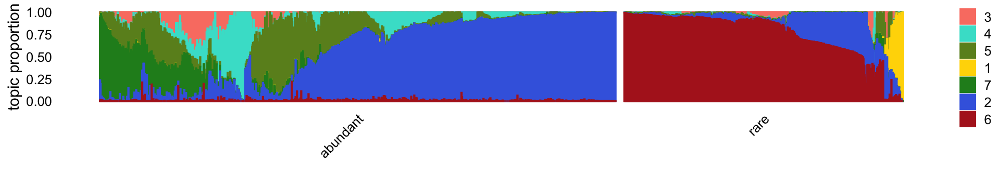
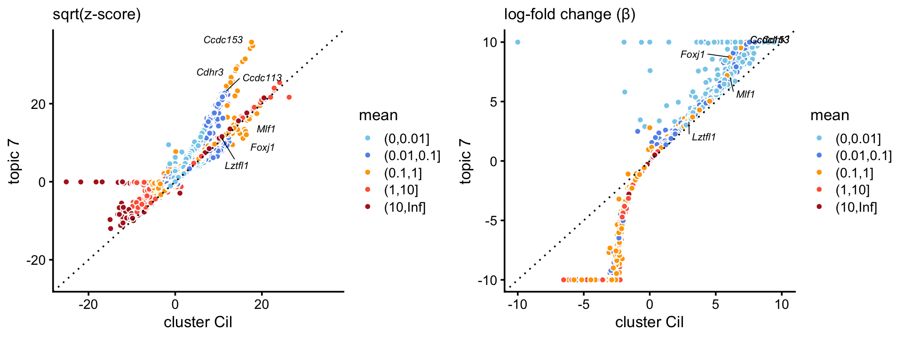
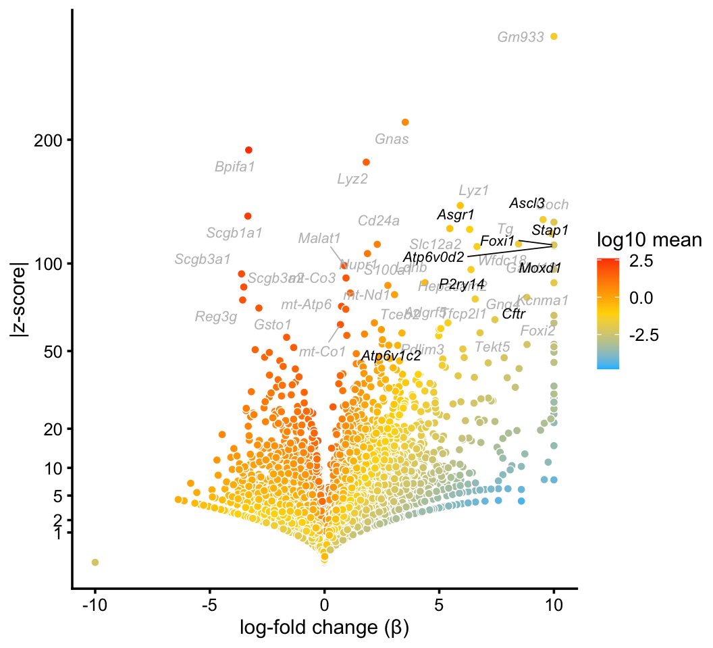
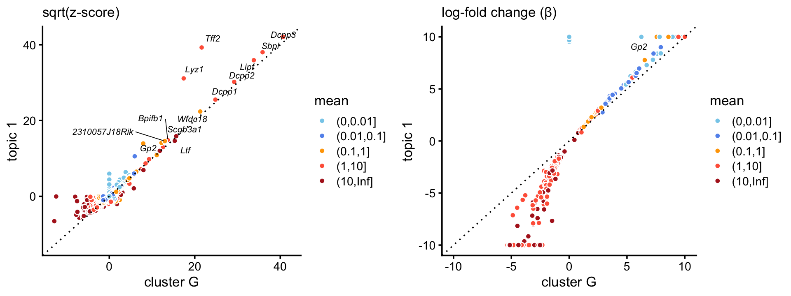
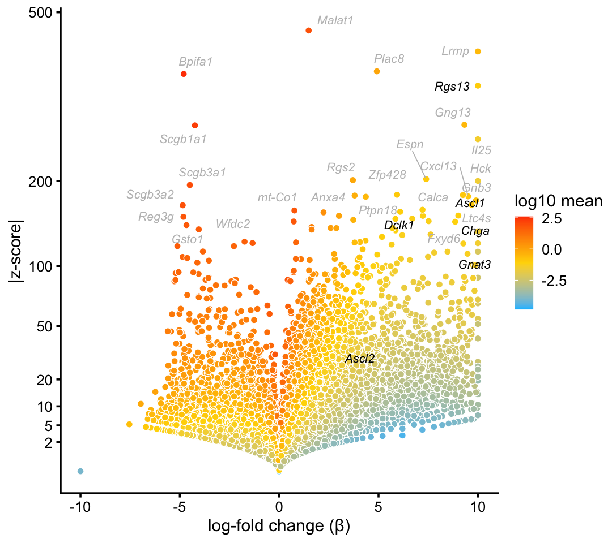

Visualize and interpret droplet and pulse-seq topics
Peter Carbonetto
Last updated: 2020-09-29
Checks: 7 0
Knit directory: single-cell-topics/analysis/
This reproducible R Markdown analysis was created with workflowr (version 1.6.2.9000). The Checks tab describes the reproducibility checks that were applied when the results were created. The Past versions tab lists the development history.
Great! Since the R Markdown file has been committed to the Git repository, you know the exact version of the code that produced these results.
Great job! The global environment was empty. Objects defined in the global environment can affect the analysis in your R Markdown file in unknown ways. For reproduciblity it’s best to always run the code in an empty environment.
The command set.seed(1) was run prior to running the code in the R Markdown file. Setting a seed ensures that any results that rely on randomness, e.g. subsampling or permutations, are reproducible.
Great job! Recording the operating system, R version, and package versions is critical for reproducibility.
Nice! There were no cached chunks for this analysis, so you can be confident that you successfully produced the results during this run.
Great job! Using relative paths to the files within your workflowr project makes it easier to run your code on other machines.
Great! You are using Git for version control. Tracking code development and connecting the code version to the results is critical for reproducibility.
The results in this page were generated with repository version 2db338f. See the Past versions tab to see a history of the changes made to the R Markdown and HTML files.
Note that you need to be careful to ensure that all relevant files for the analysis have been committed to Git prior to generating the results (you can use wflow_publish or wflow_git_commit). workflowr only checks the R Markdown file, but you know if there are other scripts or data files that it depends on. Below is the status of the Git repository when the results were generated:
Ignored files:
Ignored: analysis/figure/
Ignored: data/droplet.RData
Ignored: data/pbmc_68k.RData
Ignored: data/pbmc_purified.RData
Ignored: data/pulseseq.RData
Ignored: output/droplet/diff-count-droplet.RData
Ignored: output/droplet/fits-droplet.RData
Ignored: output/droplet/rds/
Ignored: output/pbmc-68k/fits-pbmc-68k.RData
Ignored: output/pbmc-68k/rds/
Ignored: output/pbmc-purified/fits-pbmc-purified.RData
Ignored: output/pbmc-purified/rds/
Ignored: output/pulseseq/diff-count-pulseseq.RData
Ignored: output/pulseseq/fits-pulseseq.RData
Ignored: output/pulseseq/rds/
Note that any generated files, e.g. HTML, png, CSS, etc., are not included in this status report because it is ok for generated content to have uncommitted changes.
These are the previous versions of the repository in which changes were made to the R Markdown (analysis/plots_tracheal_epithelium.Rmd) and HTML (docs/plots_tracheal_epithelium.html) files. If you’ve configured a remote Git repository (see ?wflow_git_remote), click on the hyperlinks in the table below to view the files as they were in that past version.
| File | Version | Author | Date | Message |
|---|---|---|---|---|
| Rmd | 2db338f | Peter Carbonetto | 2020-09-29 | workflowr::wflow_publish(“plots_tracheal_epithelium.Rmd”, verbose = TRUE) |
| Rmd | 4dbb46b | Peter Carbonetto | 2020-09-28 | A couple small edits to the test in the plots_tracheal_epithelium analysis. |
| Rmd | 28f8ec5 | Peter Carbonetto | 2020-09-28 | z-scores in zscore_scatterplot are now shown on sqrt-scale. |
| Rmd | bd72ce4 | Peter Carbonetto | 2020-09-28 | Improved plots for ionocytes and ciliated topics/clusters in plots_tracheal_epithelium analysis. |
| Rmd | ff9d6ef | Peter Carbonetto | 2020-09-28 | Added scatterplots for ciliated cells to plots_tracheal_epithelium analysis. |
| Rmd | 1fab15a | Peter Carbonetto | 2020-09-28 | Added plots for proliferating cells cluster to plots_tracheal_epithelium analysis. |
| Rmd | 920c62f | Peter Carbonetto | 2020-09-27 | Made a couple small edits to plots_tracheal_epithelium.Rmd. |
| Rmd | 50691bf | Peter Carbonetto | 2020-09-26 | Working on volcano plots and scatterplots for club cells in plots_tracheal_epithelium analysis. |
| Rmd | 0e10adf | Peter Carbonetto | 2020-09-26 | Working on volcano plots and scatterplots for basal and hillock cells in plots_tracheal_epithelium analysis. |
| html | 6272c69 | Peter Carbonetto | 2020-09-26 | Build site. |
| Rmd | f9fe3eb | Peter Carbonetto | 2020-09-26 | workflowr::wflow_publish(“plots_tracheal_epithelium.Rmd”) |
| Rmd | 95f91d4 | Peter Carbonetto | 2020-09-26 | Improved functions logfoldchange_scatterplot and zscores_scatterplot in plots.R. |
| Rmd | 73ef439 | Peter Carbonetto | 2020-09-26 | Made some improvements to zscore_scatterplot in plots.R. |
| Rmd | 56bb5fd | Peter Carbonetto | 2020-09-24 | Adding some scatterplots and volcano plots to plots_tracheal_epithelium analysis. |
| html | 6a9691b | Peter Carbonetto | 2020-09-24 | Added volcano plots for T+N celels to plots_tracheal_epithelium |
| Rmd | 7262a96 | Peter Carbonetto | 2020-09-24 | workflowr::wflow_publish(“plots_tracheal_epithelium.Rmd”, verbose = TRUE) |
| html | 30194ad | Peter Carbonetto | 2020-09-24 | Added volcano plots and scatterplot for goblet cells. |
| Rmd | 9e59003 | Peter Carbonetto | 2020-09-24 | workflowr::wflow_publish(“plots_tracheal_epithelium.Rmd”, verbose = TRUE) |
| html | c0fa2db | Peter Carbonetto | 2020-09-24 | Revised plots for ionocytes cluster in plots_tracheal_epithelium |
| Rmd | 81506fb | Peter Carbonetto | 2020-09-24 | workflowr::wflow_publish(“plots_tracheal_epithelium.Rmd”, verbose = TRUE) |
| html | 78d64e9 | Peter Carbonetto | 2020-09-23 | Added ionocytes volcano plot to plots_tracheal_epithelium. |
| Rmd | f0bdbda | Peter Carbonetto | 2020-09-23 | workflowr::wflow_publish(“plots_tracheal_epithelium.Rmd”, verbose = TRUE) |
| html | 361eded | Peter Carbonetto | 2020-09-23 | Added text to accompany ciliated cells volcano plots. |
| Rmd | 8198c07 | Peter Carbonetto | 2020-09-23 | workflowr::wflow_publish(“plots_tracheal_epithelium.Rmd”, verbose = TRUE) |
| html | 23f87bb | Peter Carbonetto | 2020-09-23 | Improved volcano plots for ciliated cell type in |
| Rmd | 516a32e | Peter Carbonetto | 2020-09-23 | workflowr::wflow_publish(“plots_tracheal_epithelium.Rmd”, verbose = TRUE) |
| html | 0ed5061 | Peter Carbonetto | 2020-09-22 | Added some rough, first-draft volcano plots to |
| Rmd | 6ccf998 | Peter Carbonetto | 2020-09-22 | workflowr::wflow_publish(“plots_tracheal_epithelium.Rmd”, verbose = TRUE) |
| Rmd | de36d31 | Peter Carbonetto | 2020-09-22 | Added volcano plots for ciliated cells to plots_tracheal_epithelium analysis. |
| Rmd | 082352a | Peter Carbonetto | 2020-09-22 | Added steps to plots_tracheal_epithelium analysis to compute differential expression statistics. |
| html | 06d0b30 | Peter Carbonetto | 2020-09-22 | I’m starting to revamp the plots_tracheal_epithelium analysis. |
| Rmd | 0877a1f | Peter Carbonetto | 2020-09-22 | workflowr::wflow_publish(“plots_tracheal_epithelium.Rmd”) |
| Rmd | 5af46f1 | Peter Carbonetto | 2020-09-20 | Working on Structure plot for droplet data. |
| Rmd | c072577 | Peter Carbonetto | 2020-09-19 | Re-created structure plot for pulseseq data. |
| Rmd | 942486b | Peter Carbonetto | 2020-09-18 | Fixing merge issue. |
| Rmd | 8cf758e | Peter Carbonetto | 2020-09-12 | Working on improvements to clustering of pulse-seq data. |
| Rmd | a128de5 | Peter Carbonetto | 2020-09-12 | Revamping the analysis of the pulseseq data in plots_tracheal_epithelium. |
| Rmd | 3ab7da1 | Peter Carbonetto | 2020-08-25 | A few minor edits. |
| html | f2e0b23 | Peter Carbonetto | 2020-08-25 | Fixed dimensions of PCA plots in plots_tracheal_epithelium analysis. |
| Rmd | 7b59815 | Peter Carbonetto | 2020-08-25 | workflowr::wflow_publish(“plots_tracheal_epithelium.Rmd”) |
| html | 5589611 | Peter Carbonetto | 2020-08-25 | Added PCA plots and structure plots from pulseseq data. |
| Rmd | b731a4a | Peter Carbonetto | 2020-08-25 | workflowr::wflow_publish(“plots_tracheal_epithelium.Rmd”) |
| html | c3c1b12 | Peter Carbonetto | 2020-08-25 | Build site. |
| Rmd | 2defe6d | Peter Carbonetto | 2020-08-25 | Added crosstab plot to plots_tracheal_epithelium analysis. |
| html | 97c13c2 | Peter Carbonetto | 2020-08-25 | Build site. |
| Rmd | e11855b | Peter Carbonetto | 2020-08-25 | Working on revised analysis of droplet and pulse-seq data sets. |
| html | e11855b | Peter Carbonetto | 2020-08-25 | Working on revised analysis of droplet and pulse-seq data sets. |
| Rmd | bf23ca0 | Peter Carbonetto | 2020-08-20 | Added manual labeling of purified PBMC data to plots_pbmc analysis. |
| Rmd | 077d3d5 | Peter Carbonetto | 2020-08-20 | Added k=9 and k=11 pulseseq fits to plots_tracheal_epithelium analysis. |
| html | 0ce9604 | Peter Carbonetto | 2020-08-20 | Re-built plots_tracheal_epithelium with fastTopics 0.3-162. |
| Rmd | 961570e | Peter Carbonetto | 2020-08-20 | wflow_publish(“plots_tracheal_epithelium.Rmd”) |
| html | b17bfa4 | Peter Carbonetto | 2020-08-19 | Added pulseseq PCA plots to plots_tracheal_epithelium analysis. |
| Rmd | 76dc0c6 | Peter Carbonetto | 2020-08-19 | wflow_publish(“plots_tracheal_epithelium.Rmd”) |
| Rmd | c70612f | Peter Carbonetto | 2020-08-19 | Revised structure plot settings for abundant droplet samples in plots_tracheal_epithelium. |
| html | adda33f | Peter Carbonetto | 2020-08-19 | Fixed another structure plot in plots_tracheal_epithelium analysis. |
| Rmd | 29a9258 | Peter Carbonetto | 2020-08-19 | wflow_publish(“plots_tracheal_epithelium.Rmd”) |
| html | 0a16b60 | Peter Carbonetto | 2020-08-19 | Fixed structure plot in plots_tracheal_epithelium analysis. |
| Rmd | 3a7bd74 | Peter Carbonetto | 2020-08-19 | wflow_publish(“plots_tracheal_epithelium.Rmd”) |
| html | f4bdf19 | Peter Carbonetto | 2020-08-19 | Added explanatory text and improved PC-based manual clustering of |
| Rmd | c7b77ee | Peter Carbonetto | 2020-08-19 | wflow_publish(“plots_tracheal_epithelium.Rmd”) |
| Rmd | 70a4a60 | Peter Carbonetto | 2020-08-19 | Added note to plots_tracheal_epithelium.Rmd. |
| html | fb21b3b | Peter Carbonetto | 2020-08-19 | Added very initial Structure plots to plots_tracheal_epithelium analysis. |
| Rmd | d35cb03 | Peter Carbonetto | 2020-08-19 | wflow_publish(“plots_tracheal_epithelium.Rmd”) |
| html | 368a74a | Peter Carbonetto | 2020-08-19 | Added some text to plots_tracheal_epithelium analysis. |
| Rmd | 223406b | Peter Carbonetto | 2020-08-19 | wflow_publish(“plots_tracheal_epithelium.Rmd”) |
| html | aca46cc | Peter Carbonetto | 2020-08-19 | Added manual clustering of droplet samples based on PCs. |
| Rmd | 38f811b | Peter Carbonetto | 2020-08-19 | wflow_publish(“plots_tracheal_epithelium.Rmd”) |
| Rmd | 343747e | Peter Carbonetto | 2020-08-19 | Small edit to figure dimensions. |
| html | 5a35bbd | Peter Carbonetto | 2020-08-19 | Added labeled PCA plot; adjusted plot dimensions in |
| Rmd | fb91075 | Peter Carbonetto | 2020-08-19 | wflow_publish(“plots_tracheal_epithelium.Rmd”) |
| html | 8b9b528 | Peter Carbonetto | 2020-08-19 | Added more PCA plots to plots_tracheal_epithelium analysis. |
| Rmd | ee7cbf1 | Peter Carbonetto | 2020-08-19 | wflow_publish(“plots_tracheal_epithelium.Rmd”) |
| html | c517ea2 | Peter Carbonetto | 2020-08-18 | Small fix to one of the PCA plots in plots_tracheal_epithelium. |
| Rmd | 8f5c210 | Peter Carbonetto | 2020-08-18 | wflow_publish(“plots_tracheal_epithelium.Rmd”) |
| html | 01afbd2 | Peter Carbonetto | 2020-08-18 | Added some PC plots to the plots_tracheal_epithelium analysis. |
| Rmd | f1c7d02 | Peter Carbonetto | 2020-08-18 | wflow_publish(“plots_tracheal_epithelium.Rmd”) |
| html | 0a04fc1 | Peter Carbonetto | 2020-08-18 | Added abundance plots to plots_tracheal_epithelium analysis. |
| Rmd | f914f7e | Peter Carbonetto | 2020-08-18 | wflow_publish(“plots_tracheal_epithelium.Rmd”) |
| Rmd | 61917ad | Peter Carbonetto | 2020-08-18 | Working on new analysis, plots_tracheal_epithelium.Rmd. |
Here we closely examine the topic modeling results for the two epithelial airway data sets (droplet and pulse-seq), and investigate the benefits of modeling single cells as mixtures of gene expression programs in these data sets. In particular, we will compare and contrast differential expression in clusters vs. topics.
Load the packages used in the analysis below, as well as additional functions that we will use to generate some of the plots.
library(Matrix)
library(dplyr)
library(fastTopics)
library(ggplot2)
library(ggrepel)
library(cowplot)
source("../code/plots.R")Load data and results
Load the smaller “droplet” data set, the \(k = 7\) Poisson NMF model fit for these data, the 8 clusters identified in the clustering analysis, and the results of the differential expression analysis.
load("../data/droplet.RData")
load("../output/droplet/diff-count-droplet.RData")
counts_droplet <- counts
samples_droplet <- readRDS("../output/droplet/clustering-droplet.rds")
fit_droplet <- readRDS("../output/droplet/rds/fit-droplet-scd-ex-k=7.rds")$fit
diff_count_droplet <- diff_count_topics
diff_count_clusters_droplet <- diff_count_clusters
diff_count_merge_droplet <- diff_count_merge_club
rm(samples,counts)
rm(diff_count_topics,diff_count_clusters,diff_count_merge_club)For reference, we show here the Structure plot from the clustering analysis of the droplet data. This Structure plot summarizes the topic proportions in each of the 8 subsets (including the background cluster).

Next, we load the larger “pulse-seq” data set, the \(k = 11\) Poisson NMF model fit for these data, and the 7 clusters identified in the clustering analysis.
load("../data/pulseseq.RData")
load("../output/pulseseq/diff-count-pulseseq.RData")
counts_pulseseq <- counts
samples_pulseseq <- readRDS("../output/pulseseq/clustering-pulseseq.rds")
fit_pulseseq <- readRDS("../output/pulseseq/rds/fit-pulseseq-scd-ex-k=11.rds")$fit
diff_count_pulseseq <- diff_count_topics
diff_count_clusters_pulseseq <- diff_count_clusters
diff_count_merge_pulseseq <- diff_count_merge_bc
rm(samples,counts)
rm(diff_count_topics,diff_count_clusters,diff_count_merge_bc)For reference, we show here the Structure plot from the clustering analysis of the pulse-seq data. This Structure plot summarizes the topic proportions in each of the 7 subsets (including the background cluster):

Ciliated cells
We begin with the cluster that captures ciliated cells. This cluster is one of the most distinctive in both the droplet and pulse-seq data sets. Ciliated cells are abundant, though not as much as basal and club cells.
ciliated_genes <- c("Ccdc113","Ccdc153","Cdhr3","Foxj1","Lztfl1","Mlf1")
p1 <- volcano_plot_with_highlighted_genes(diff_count_clusters_droplet,"Cil",
ciliated_genes,
label_above_quantile = 0.998)
print(p1)
| Version | Author | Date |
|---|---|---|
| 6272c69 | Peter Carbonetto | 2020-09-26 |
| 6a9691b | Peter Carbonetto | 2020-09-24 |
| 30194ad | Peter Carbonetto | 2020-09-24 |
| c0fa2db | Peter Carbonetto | 2020-09-24 |
| 78d64e9 | Peter Carbonetto | 2020-09-23 |
| 361eded | Peter Carbonetto | 2020-09-23 |
| 23f87bb | Peter Carbonetto | 2020-09-23 |
| 0ed5061 | Peter Carbonetto | 2020-09-22 |
Marker genes and transcription factors identified in Montoro et al (2018) are highlighted in black, and other top differentially expressed genes are shown with gray labels.
We obtain similar top differentially expressed genes in the pulse-seq data:
p2 <- volcano_plot_with_highlighted_genes(diff_count_clusters_pulseseq,"Cil",
ciliated_genes,
label_above_quantile = 0.998)
print(p2)
The topic for the ciliated cell-type (\(k = 7\)) corresponds very closely to the “Cil” cluster in the pulse-seq data. In addition, gene enrichments are considerably stronger in the topic for ciliated genes, particularly so for some genes with lower expression levels.
p3 <- zscores_scatterplot(diff_count_clusters_pulseseq,
diff_count_pulseseq,"Cil","k7",ciliated_genes,
xlab = "cluster Cil",ylab = "topic 7")
p4 <- beta_scatterplot(diff_count_clusters_pulseseq,diff_count_pulseseq,
"Cil","k7",ciliated_genes,
xlab = "cluster Cil",ylab = "topic 7")
plot_grid(p3,p4)
Ionocytes
In the pulse-seq data, we identify a distinctive cluster for the newly discovered, rare “ionocyte” cell type. Gene expression in these cells is not fully captured by any single topic, yet the mixture of topics forms a distinctive cluster.
ionocyte_genes <- c("Ascl3","Asgr1","Atp6v0d2","Atp6v1c2","Cftr","Foxi1",
"Moxd1","P2ry14","Stap1")
p5 <- volcano_plot_with_highlighted_genes(diff_count_clusters_pulseseq,"I",
ionocyte_genes,
label_above_quantile = 0.998)
print(p5)
We do not identify a cluster for ionocytes in the droplet data. Judging by expression of the Foxi1 ionocyte marker gene, only a handful of cells in the droplet data are ionocytes:
p6 <- pca_plot_with_counts(fit_droplet,counts_droplet[,"Foxi1"],1:2)
print(p6)
Goblet cells
Consistent with Montoro et al (2018), we identify a cluster of Goblet cells in the droplet data.
goblet_genes <- "Gp2"
p7 <- volcano_plot_with_highlighted_genes(diff_count_clusters_droplet,"G",
goblet_genes,
label_above_quantile = 0.998)
print(p7)
Topic \(k = 1\) is unique to this cluster suggesting that the this topic characterizes the goblet cell type. Indeed, there is a very close correspondence between the topic and cluster, with several characteristic genes (e.g. Gp2) showing somewhat stronger enrichment in the topic.
p8 <- zscores_scatterplot(diff_count_clusters_droplet,
diff_count_droplet,"G","k1",goblet_genes,
label_above_score = 200,
xlab = "cluster G",ylab = "topic 1")
p9 <- beta_scatterplot(diff_count_clusters_droplet,diff_count_droplet,
"G","k1",goblet_genes,xlab = "cluster G",
ylab = "topic 1")
plot_grid(p8,p9)
Tuft and pulmonary neuroendocrine cells
In both data sets, we identify clusters for tuft and pulmonary neuroendocrine cells. The fitted topic models do not distinguish between these two rare cell types; we identify these cell types as a single cluster.
tuft_neuroendocrine_genes <- c("Ascl1","Ascl2","Ascl3","Chga","Dclk1","Rgs13")
p8 <- volcano_plot_with_highlighted_genes(diff_count_clusters_droplet,"T+N",
tuft_neuroendocrine_genes,
label_above_quantile = 0.998)
print(p8)
Here is the volcano plot from the pulse-seq data:
p9 <- volcano_plot_with_highlighted_genes(diff_count_clusters_pulseseq,"T+N",
tuft_neuroendocrine_genes,
label_above_quantile = 0.998)
print(p9)
Basal cells
We now move on to the large majority of cells in each of the epithelial airway data sets that do not break down into distinct clusters.
Abundant basal cells in droplet data:
basal_genes <- c("Aqp3","Krt5","Dapl1","Hspa1a","Trp63")
p10 <- volcano_plot_with_highlighted_genes(diff_count_clusters_droplet,"B",
basal_genes,
label_above_quantile = 0.995)
print(p10)Compare basal topic (\(k = 2\)) against basal cluster in droplet data:
p11 <- beta_scatterplot(diff_count_clusters_droplet,diff_count_droplet,
"B","k2",basal_genes,labs = "cluster B") +
labs(x = "cluster B",y = "topic 2",title = "log-fold change (\u03b2)")
print(p11)Basal cells in pulse-seq data:
p12 <- volcano_plot_with_highlighted_genes(diff_count_clusters_pulseseq,"B",
basal_genes,
label_above_quantile = 0.995)
print(p12)Compare combined basal topics (\(k = 1, 3, 9\)) against cluster in pulse-seq data:
p13 <- beta_scatterplot(diff_count_clusters_pulseseq,
diff_count_merge_pulseseq,
"B","k1+k3+k9",basal_genes,label_above_score = Inf) +
labs(x = "cluster B",y = "topics 1, 3 and 9",
title = "log-fold change (\u03b2)")
print(p13)Club cells
Club cells in droplet data:
club_genes <- c("Nfia","Cbr2","Krt15","Cyp2f2","Lypd2","Scgb1a1")
p16 <- volcano_plot_with_highlighted_genes(diff_count_clusters_droplet,"C",
club_genes,
label_above_quantile = 0.995)
print(p16)Club cells in pulse-seq data:
p17 <- volcano_plot_with_highlighted_genes(diff_count_clusters_pulseseq,"C",
club_genes,
label_above_quantile = 0.995)
print(p17)Club topic in droplet data:
p18 <- beta_scatterplot(diff_count_clusters_droplet,diff_count_merge_droplet,
"C","k5+k7",club_genes,label_above_score = Inf)
print(p18)Club topic in pulse-seq data:
p19 <- beta_scatterplot(diff_count_clusters_pulseseq,diff_count_merge_pulseseq,
"C","k4+k5+k6+k8+k10",club_genes,
label_above_score = Inf)
print(p19)Proliferating cells
Proliferating cells in pulse-seq data:
cell_cycle_genes <- c("Cdk1","Ube2c","Top2a")
p14 <- volcano_plot_with_highlighted_genes(diff_count_clusters_pulseseq,"P",
cell_cycle_genes,
label_above_quantile = 0.998)
print(p14)qt_random_tie <- function (x) {
y = rank(x,ties.method = "random")
return(qqnorm(y,plot.it = FALSE)$x)
}
rows <- with(samples_pulseseq,which(cluster == "B" | cluster == "P"))
fit2 <- select(poisson2multinom(fit_pulseseq),loadings = rows)
X <- counts_pulseseq[rows,cell_cycle_genes]
Y <- apply(X,2,qt_random_tie)
rownames(Y) <- rownames(X)
score <- rowSums(Y)
pdat <- as.data.frame(prcomp(fit2$L)$x)
pdat <- cbind(pdat,data.frame(score = score))
p15 <- ggplot(pdat,aes(x = PC5,y = PC6,fill = score)) +
geom_point(shape = 21,color = "white",size = 1.25) +
scale_fill_gradientn(colors = c("darkblue","royalblue",
"lightskyblue","darkorange","firebrick")) +
theme_cowplot(font_size = 10)Hillock cells
Hillock cells in droplet data:
hillock_genes <- c("Anxa1","Cldn3","Ecm1","Krt13","Krt4","Lgals3","S100a11")
p14 <- volcano_plot_with_highlighted_genes(diff_count_clusters_droplet,"H",
hillock_genes,
label_above_quantile = 0.998)
print(p14)Compare Hillock topic (\(k = 4\)) against cluster in droplet data:
p15 <- beta_scatterplot(diff_count_clusters_droplet,diff_count_droplet,
"H","k4",hillock_genes,label_above_score = Inf) +
labs(x = "cluster H",y = "topic 4",title = "log-fold change (\u03b2)")
print(p15)
p15 <- zscores_scatterplot(diff_count_clusters_droplet$Z[,"H"],
diff_count_droplet$Z[,4],
diff_count_droplet$colmeans,
colnames(counts_droplet),
label_above_score = 100,
zmax = 400) +
labs(x = "cluster H",y = "topic 4",title = "z-scores")TO DO: Hillock topic (\(k = 1\)) in pulse-seq data:
sessionInfo()
# R version 3.6.2 (2019-12-12)
# Platform: x86_64-apple-darwin15.6.0 (64-bit)
# Running under: macOS Catalina 10.15.6
#
# Matrix products: default
# BLAS: /Library/Frameworks/R.framework/Versions/3.6/Resources/lib/libRblas.0.dylib
# LAPACK: /Library/Frameworks/R.framework/Versions/3.6/Resources/lib/libRlapack.dylib
#
# locale:
# [1] en_US.UTF-8/en_US.UTF-8/en_US.UTF-8/C/en_US.UTF-8/en_US.UTF-8
#
# attached base packages:
# [1] stats graphics grDevices utils datasets methods base
#
# other attached packages:
# [1] cowplot_1.0.0 ggrepel_0.9.0 ggplot2_3.3.0 fastTopics_0.3-177
# [5] dplyr_0.8.3 Matrix_1.2-18
#
# loaded via a namespace (and not attached):
# [1] Rcpp_1.0.5 lattice_0.20-38 tidyr_1.0.0
# [4] prettyunits_1.1.1 assertthat_0.2.1 zeallot_0.1.0
# [7] rprojroot_1.3-2 digest_0.6.23 R6_2.4.1
# [10] backports_1.1.5 MatrixModels_0.4-1 evaluate_0.14
# [13] coda_0.19-3 httr_1.4.1 pillar_1.4.3
# [16] rlang_0.4.5 progress_1.2.2 lazyeval_0.2.2
# [19] data.table_1.12.8 irlba_2.3.3 SparseM_1.78
# [22] whisker_0.4 rmarkdown_2.3 labeling_0.3
# [25] Rtsne_0.15 stringr_1.4.0 htmlwidgets_1.5.1
# [28] munsell_0.5.0 compiler_3.6.2 httpuv_1.5.2
# [31] xfun_0.11 pkgconfig_2.0.3 mcmc_0.9-6
# [34] htmltools_0.4.0 tidyselect_0.2.5 tibble_2.1.3
# [37] workflowr_1.6.2.9000 quadprog_1.5-8 viridisLite_0.3.0
# [40] crayon_1.3.4 withr_2.1.2 later_1.0.0
# [43] MASS_7.3-51.4 grid_3.6.2 jsonlite_1.6
# [46] gtable_0.3.0 lifecycle_0.1.0 git2r_0.26.1
# [49] magrittr_1.5 scales_1.1.0 RcppParallel_4.4.2
# [52] stringi_1.4.3 farver_2.0.1 fs_1.3.1
# [55] promises_1.1.0 vctrs_0.2.1 tools_3.6.2
# [58] glue_1.3.1 purrr_0.3.3 hms_0.5.2
# [61] yaml_2.2.0 colorspace_1.4-1 plotly_4.9.2
# [64] knitr_1.26 quantreg_5.54 MCMCpack_1.4-5